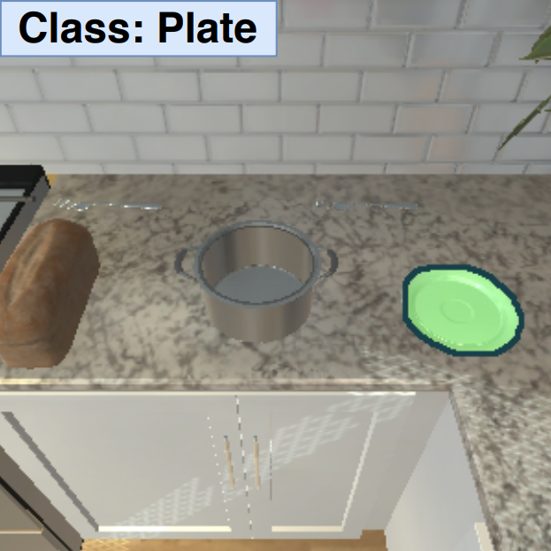
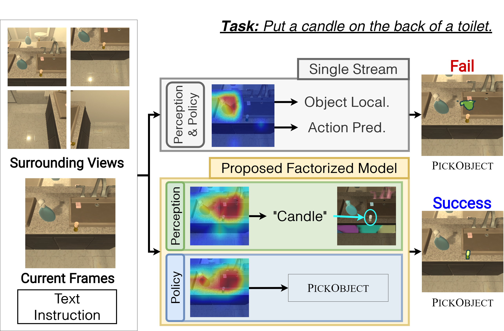
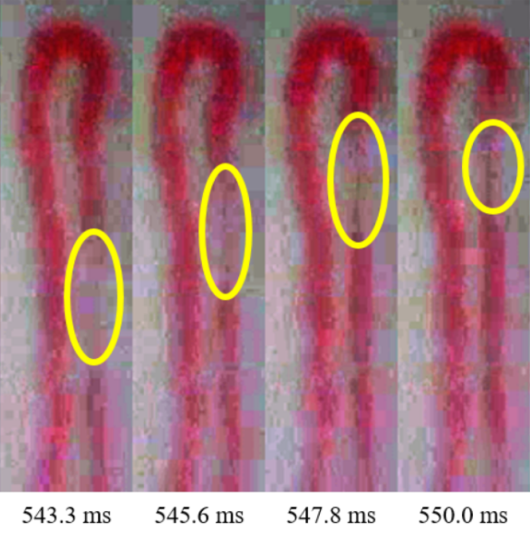

|
I am a second-year M.S./Ph.D. graduate student at Computer Vision Lab. at GIST advised by Prof. Jonghyun Choi. I received a B.S. degree from Kwangwoon University under the supervision of Prof. Cheolsoo Park. Email / Google Scholar / LinkedIn / Twitter / Github |

|
|  |
Kunal Pratap Singh* , Suvaansh Bhambri* , Byeonghwi Kim* , Roozbeh Mottaghi , Jonghyun Choi ICCV, 2021 [pdf] [bibtex] [code] |
|  |
Byeonghwi Kim , Suvaansh Bhambri , Kunal Pratap Singh , Roozbeh Mottaghi , Jonghyun Choi Embodied AI Workshop @ CVPR, 2021 [pdf] [bibtex] |
|  |
Byeonghwi Kim* , Yuli-Sun Hariyani*, Young-Ho Cho, Cheolsoo Park Sensors, 2020 [pdf] [bibtex] |
|
This template is from Jon Barron. |